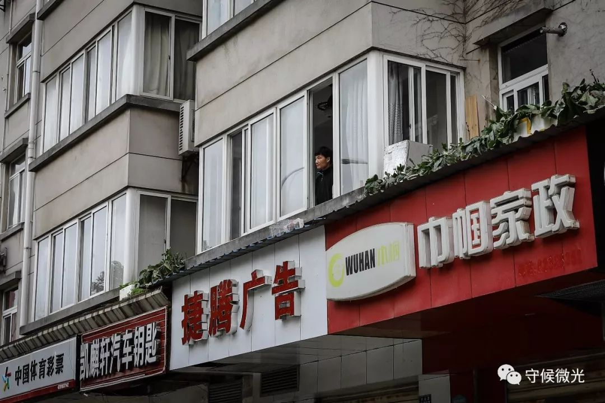
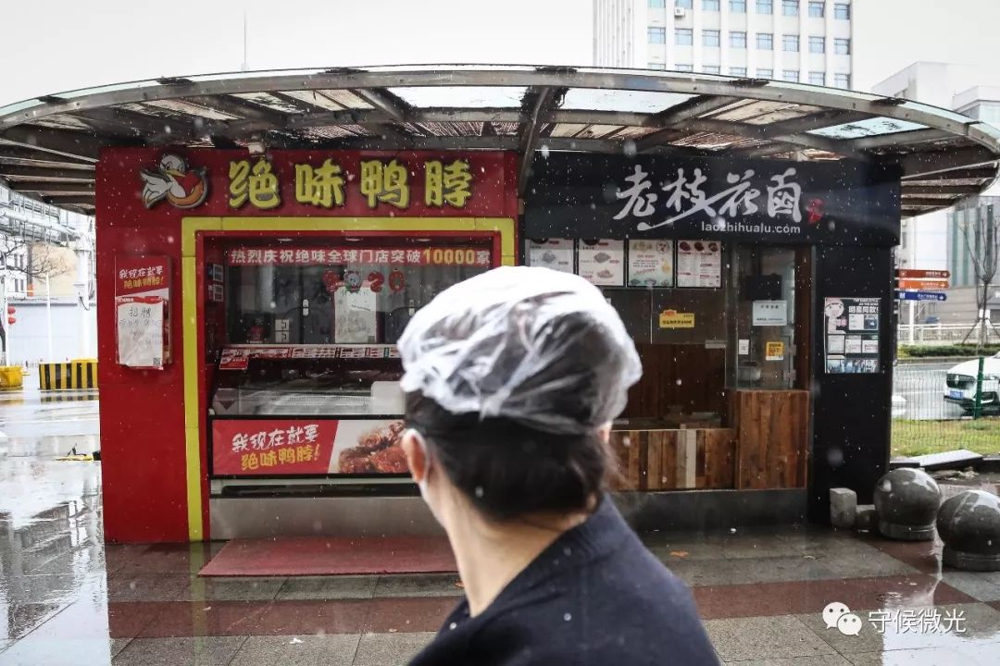
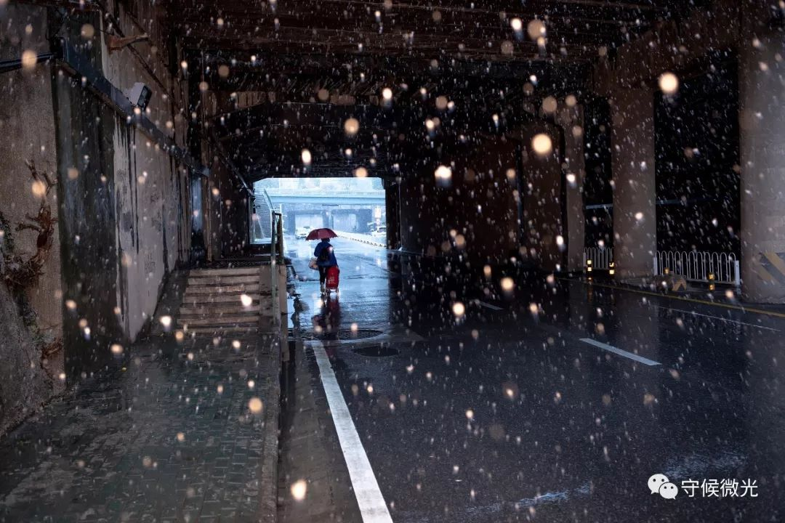
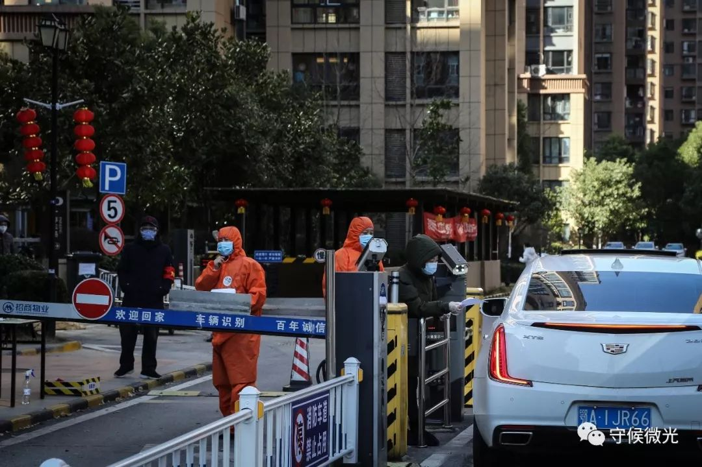

主菜留给参建火神山的女婿：武汉老人的抗疫日记 | 来稿
原文链接 备份链接 【编者按】 28日，我们收到了一位名为“尘香”的读者来信，她是武汉人，退休在家，和丈夫、女儿、女婿一起留守在武汉市江汉区：截至2020年1月29日24时，武汉市累计报告新型冠状病毒感染的肺炎病例已达2261例，死 …
若干年后回望，这一定是一段值得铭记的日子。因为新冠肺炎疫情，许多家庭无法团圆。疫情数据地图的每次刷新都令人揪心。我们和千万武汉人在一起，这不只是一句安慰，因为没有人能够置身事外。
之前，我们向用户征集这段时间的故事，鼓励大家写下属于自己的“武汉日志”。现在，我们挑选出其中的几篇，分享给大家。
医生们追求，有时去治愈、常常去帮助、总是去安慰。我们相信，尽可能分享有关此次疫情的事实，对他人就是一种安慰剂，能够帮助社会共克时艰。
如果你还有愿意记录下来的故事，欢迎继续发给我们，文字、图片、视频均可，如果您没有时间成文或拍摄，可提供线索并留下联系方式。
要求真实、原创，文字内容不少于1000字，发送时请注明署名及联系方式。
中国青年报社征集邮箱：wuhanstory@126.com

2月19日，百步亭社区，一位在窗口远眺的居民。中国青年报 赵迪/摄
这篇日志的作者李亚玲是武汉市一所高校的教师，也是两个孩子的母亲。新冠肺炎疫情升级后，她用两万多字的篇幅，记录下了一些武汉的日常。
武汉“封城”期间，她和两个女儿，以及她的母亲一起度过。她在日志里写下了她对一些热点新闻的思考，也写下了她日常的焦虑和无奈。她为家里的蔬菜着急，也为母亲偶尔一声的咳嗽担忧整晚，汽车油箱里仅剩的一点汽油，她都要仔细规划。日志的大部分内容琐碎真实，是”封城“后，武汉的900多万种生活之一。
日志有点长，我们截取了一部分，分享给大家。
本文约3687字
作者 李亚玲
2020年1月23日星期四 武汉封城第一天
早上醒来第一件事就是打开手机，微信里有很多信息，武汉封城的消息果然还是来了。
虽然昨晚我也料到了。但是真的面对这个消息时，还是有那么一丝丝错愕。我看身边的俩小人还在熟睡，起床到我妈的房间门口看了一眼，她也还闭着眼睛睡着的样子。我没有吭声，回到房间坐着盘算了一下，这两日买的食物和日用是否足够，感觉还是不踏实，得再去补充些物资。于是，我穿好衣服，拿上大口袋。走过我妈房间时，看到她动了一下。我跟她说：妈，武汉封城了。说完这句话我竟然有点哽咽，停顿了一下后说，我下楼去买点东西。她嘱咐我买点胡萝卜、白菜之类的备着，还宽慰我说，没事的，政府肯定会保证粮食物资供应的。
我没有多想，拿上垃圾下楼了。电梯里没有遇到一个人，出到小区，也只是看到物业的工作人员一路小跑着忙着什么。我丢了垃圾，心想，封城后这垃圾处理应该还是一如往常吧？今后尽量少制造点垃圾吧。
小区门口的菜场里人头攒动，都是排队等待结账的。看来我还是起晚了。为了节约时间我转头去超市，路上经过药店，想进去买点常用药备着，结果里面的人太多我就退了出来，现在看到人多我就有点恐惧。我继续前往超市，超市里人不多，但每个人都是拿着篮子一堆堆地往里装，方便面几乎被抢光了，84消毒液早都没有了，超市老板给供货商打电话，说没货，京东都没货。我脑子里已经有点混乱了，随手拿了两包挂面和5包榨菜，又买了些洗手液等日用品，给娃买了几个画画的本子和双面胶，想着宅在家里的日子可能长着呢，得找点事做。
从超市出来，刚才路过的药店里已经没那么多人了，我进去，看到很多人都在挑口罩，药店导购还在不停地往外拿，我也拿了两盒50个装的一次性医用口罩，给娃备了些常用药，期间不断有人问酒精在哪呢，药店导购说：早就卖光了。买了药出来，我又给孩子买了些零食，到买菜的铺子里买了些土豆、胡萝卜和白菜，然后就回家了。
回家后把买的东西放到厨房里，然后去阳台把自己的帽子、手套、外衣全脱了丢进洗衣机里洗。口罩已经丢到楼门口的垃圾桶里。接着赶紧冲了澡。里外的衣服全部都换了，才安心地坐下来吃了早饭。
封城，就这样在意料之中又有点猝不及防地来临了。

2月16日，湖北省武汉市，江汉路的一家超市门前，市民排起了长队。据超市张贴的通知，顾客需分批次进入，每半小时进入30个人。中国青年报 李隽辉/摄
2020年1月24日星期五 武汉封城第二天
昨天下午和晚上一直有点坐立不安，该改的和该写的论文一样也进行不下去。我的不安一方面是来自于有关疫情的悲观信息，另一方面是因为早上出门买了一趟东西，总是有点担心自己是否携带了病毒。我跟同学在微信上用开玩笑的语气说：出一趟门回来，要进行很久的心理建设。可实际上，我的担心并不是玩笑，因为家里守着一老俩小，不得不让我要格外谨慎。我的心理紧张妈能看出来，但她不说。俩小人是一点没有察觉，从下午到晚上，俩人画了很多画，做了很多手工，把我刚从超市买的画本和双面胶用去了一大半。
昨天的媒体上，能看到管轶的害怕和无力感，也有“武汉版’小汤山’动工”带来的一丝希望的消息。我在微信里跟一位好友倾诉自己的悲观情绪，在各种群里、圈里和学生面前表现自己坚强乐观的一面。人生就是一场戏，在不同的场景和角色下，要扮演好自己。
从理性上来讲，我相信财新网的报道和管轶的话（《管轶：去过武汉请自我隔离》），我觉得他们是想要引起人们的高度重视。只是“10倍起跳”“我害怕了”这样的字眼过于醒目，让人们没有关注到重点。
今天醒来时已经9点过10分了，我没有着急打开手机看新闻，而是拉开窗帘望向楼下。本就不是主干道的马路在阴冷潮湿的空气中显得格外冷清，只有三三两两的人拎着袋子或推着车还在采购归家的路上。如果不是因为疫情，这情景就如同每个寻常的冬日周末上午，人们还没睡醒，可过了午后就开始变得热闹起来了。如今时间仿佛凝固在了此刻，午后热闹的场景不会出现了。
孩子们起床了，把他们服侍完毕，我看到厨房堆的有垃圾，想着应该去丢了。我穿好衣服鞋子，戴好口罩，仔细检查了是否密封后才出门。其实只是乘电梯到楼下丢垃圾而已，但是我提醒自己也要务必谨慎。幸好整个过程都没有遇到人，我站在电梯中央，努力让自己不要接触任何东西。回到家中，还是把外衣和鞋子放到阳台上，用洗手液洗了两遍手才坐定下来。这时，妈开始问我中午准备什么年饭了。
我们家素来的传统是每年年三十的中午一大家人聚在一起，准备一大桌丰盛的年饭。自从6年前俩小人来到我家，我妈就一直在武汉陪着我们，因为过年时北方冷，加上赶春运麻烦，我妈这些年都是跟我们在武汉过，中间有几年我二哥、大哥一家分别来陪我妈过年。妈在哪里，哪里就是家。
今年的三十就比较特殊了，只有我们娘四个在武汉躲疫情。考虑后面还要持久战，我跟妈决定还是简单一点吧。就煮了一锅面条、菌菇和青菜，我还不停跟妈强调：少弄点，要做长久打算。为了养生，妈特意在锅里加了红枣、枸杞之类。开了一瓶酒，四个女人举杯恭祝新春快乐。就这样简简单单地打发了年饭。

2月15日，湖北省武汉市，一名行人望向两家没有营业的商店。中国青年报 赵迪/摄
2020年1月26日星期日 武汉封城第四天
今天武汉的封城举措又进一步升级了，零点起市中心对机动车也限行了。昨天下午这个消息一出来，赶着出门去买东西的人一定不少吧。我跟妈商量了一下，目前家里备的食物坚持半月以上是没问题的，没有必要此刻出门去凑热闹。即使需要出门，我也不打算开车，我清楚车里的油只够跑100公里了，要留着防备紧急必须的情况才能使用，这一点我没有跟妈讲。
昨晚在业主群里，有不少人担心不能用车，必要的出门怎么解决。今天一早物业和社区的人在群里发了武汉交警的解释，并说明昨晚开始接到很多用车的电话，但是社区里只配了一辆车服务5000户住户，配车原则上是只用于居家隔离观察的人日常所需用品的代买。凡是没有接到短信通知限行的车辆都是可以出门的。这一解释才消除了人们的焦虑。
今天上午我打算出门看看附近商铺营业的情况，就全副武装后出门了。戴着两个医用口罩，我还是闻到了电梯里的84消毒水的味道，现在这个味道让人觉得安心。
地面都是昨夜的雨留下的积水，我小心地绕行着。我的呼吸、口罩和冰冷的空气开始让我的眼镜起雾了，又不敢用手去擦，只能拿手中的袋子时不时地扇一扇。看不清路面，我走得很慢，努力让每一步都踩踏实。路上拿出手机拍了几张街景和营业商铺的照片。
来到中百超市，看到生鲜区聚集的人，着实有点惊着了，本以为不会有什么人呢。还好大家都是在抢绿色蔬菜和白萝卜，我尽力避开人群，拿了两把无人问津的茴香和两包小南瓜，就赶紧去其他区域买了些可能用到的日用品。在日化区，84消毒液堆在空地上，有不少人三五瓶地往购物车里装。我拿了两瓶就去结账了。出超市门时也没有人检查核对物品和购物单了，工作人员都在检查进超市的人。
从超市出来的路上，又陆陆续续看到不少人往超市的方向去。回家的路上绕道去了水果店，鲜丰水果还在营业，恰好有娃要吃的草莓和哈密瓜。我问售货的小伙子，是否会一直营业。他回答说：不好说。公司的仓库在汉口，目前隧道封闭了，货运不过来，不知道后面会是啥情况呢。他让我多带点水果。我一来不想囤水果怕烂掉，二来我也确实拿不了啦。于是就只买了的两个哈密瓜和一盒草莓。
回去快到小区大门口时，看到配送生鲜蔬菜的快递小哥正停车拿货下来，准备进小区送货，结果储物盒堆的太高倒了，不得已折回来，把货理好。我注视着小哥走远，不知道他此刻是什么心情，我在心里一声叹息，生活不易啊！今天0:24我在一个生鲜APP上搜索货物时，已经显示今日配送额度用完。早在两天前就有业主在群里说，生鲜的快递要抢的，通常零点刚过就差不多抢完了。主要不是没货，而是快递小哥有限，每日能送的单子最多500单，满了就不再接单。此刻，快递小哥成了稀缺资源。
在小区里，有刚下楼的邻居，也正赶着去买东西。看到有人买到绿色蔬菜，很是欣喜。询问了来处，一路小跑着走了。
我回到家里，卸货，清洗完毕，已经是中午了。

2月16日，湖北省武汉市，送菜小哥许可在为取单的小区居民摆放货品。中国青年报 赵迪/摄
2020年1月30日星期四 武汉封城第七、八天
这两天晚上有点睡不好，总是会醒。29日凌晨起来上厕所时，仿佛听到我妈房间里传来一阵剧烈的咳嗽声，等我仔细再听时又没有了声音。这时，家人的任何一声咳嗽和任何一个喷嚏都会让我无比警惕。我回自己房间躺下后却怎么也睡不着了，竖着耳朵关注我妈房间里的动静，好一阵子都静悄悄的，窗外还一片漆黑，距离天亮还早吧。
我躺着，睁着眼睛，努力梳理头绪。首先安慰自己没事的，从20日开始妈就没出过门，19日只在小区里溜达了一会，17日去菜场买过一次菜，也差不多快两周了，肯定没事的。其次，计划一下如果有最坏的情况出现，该怎么办。说实话，想到这点我的大脑就有点迟钝了，现在家里只有我和我妈两个大人，家里又不具备居家隔离的条件，想来想去都没有B方案。所以只有在心里念佛、祈祷。
好容易熬到窗外天色发亮，我打开手机看了看时间，刚过6点，我忍着没起来。差不多快到7点时，我用微信给我妈发了条信息，问她半夜咳嗽好点没。妈过了好一阵回复说：没觉得不舒服。我半信半疑，又怕自己的焦虑情绪传染给她，引起不必要的冲突，独自在床上辗转反侧了一会，竟又睡着了。等再醒来时，已经过了9点半，头昏昏沉沉的。
起床后，我妈已经蒸好了一大锅茴香馅的包子。后来才知道，她咳凑是因为昨天吃猕猴桃吃得有点烧心，半夜起来吃了几粒生花生米，不巧花生皮粘住了喉咙，导致一阵剧烈咳嗽。我悬着的心这才放回了肚子里。由于一夜没睡好，一整天都有点头痛。白天除了做饭的时间，其他多数时候都在床上躺着，昏昏欲睡又睡不着。俩小人很配合地自己安排自己，破天荒地没有争吵。
今天起来，我的精神好了很多，身上也轻松了不少。午饭过后，打开电脑准备补上昨天的日记。当我记录下昨天的“咳嗽惊魂”时，突然觉得自己像个喜剧导演似的，实力演绎了什么叫“杯弓蛇影”。我昨天的经历只不过自己脑补出来的自己吓自己而已，然而不知道有多少家庭都真实经历了病毒的入侵和扩散。
这时我开始理解，前两日业主群里发布的小区那个疑似病例了。当时还跟同学开玩笑说物业后来的解释跟绕口令似的让人无法理解。物业先是发通知说小区发现一例确诊病例，后又改口说没确诊，具体情况是：该人的妻子发烧，妻子怀疑是被丈夫（该人）传染，所以妻子打电话给社区医院，目前丈夫在医院接受隔离观察和治疗，尚未确诊。最近看到媒体也有报道各种亲人间的相互举报，无论是媒体还是网友的评论仿佛都一致地拍手称赞。可是，一家人为何会闹到“大义灭亲”的地步呢？

2月19日，百步亭社区，两位工作人员在未打通业主电话的情况下上门询问情况。中国青年报 赵迪/摄
2020年2月2日星期日 武汉封城第十一天
昨晚临睡前看了大家都在转发的“统计数字之外的人”。虽然身处武汉疫区，但作为一直封闭在家没有出门的人，看到文中描绘的医院里的情景，也会感到陌生，只是恐惧感可能会更近一些。最近不断有亲人、朋友询问我们武汉的情况，高一班主任老师也试图想从我这里得到一个真实武汉的回答。可是我回答不了。此时，我能看到的就是自己的妈妈和孩子，还有窗外那一小片社区的街景。我每日能做的，就是做好饭、陪好娃，让自己的生活能正常地过下去。
今天起来，我没有急着打开手机去看新的疫情数字。这两天学校里发出不少通知，要求开始部署新学期的教学和科研工作了。不管疫情接下来的发展怎样，活着的人们生活和工作都得继续下去。

2月19日，百步亭社区一家小区门外，居民等待领取在网络上订购的蔬菜。中国青年报 赵迪/摄
2020年2月3日星期一 武汉封城第十二天
今天早上打开手机，一大波让人振奋的好消息。小区物业开始提供蔬菜代买服务了，听朋友说她们家的小区也开始卖菜了。我们业主委员会采购了一批口罩，给每户免费发放10个。社区网格员最近每天定时公布社区疫情（截止今晚，我们社区有1例死亡，1例确诊，3例医院观治，6例居家隔离），各种政府举措也都及时转发到群里，感觉一切似乎都有了秩序。中午，趁着领口罩的时机，我顺便出门去采购了一趟。
在物业处领口罩时，大家都很自觉地相互间隔1米以上排队领取。领完口罩，我就去了超市。超市里的人不少，但是大家都很从容地采购，没有抢。基本生活所需的物资还是挺充足的，就是娃爱吃的方便面、原味咖喱没有了。我买了些蟹味菇、意面酱、酸奶、饼干、湿纸巾等等，拿着拿着就装满了一大包。从超市出来，顺路在楼下的菜铺买了些西葫芦和白菜，为明天打春的饺子做馅。买菜时我背着一大包东西，站在哪里都有点挡路。我拿完白菜转身的时候，只见一个黑衣女子马上像弹簧一样跳到远处，生怕沾着我一丝一毫。这让我有点不好意思起来。眼下，保持距离就是对他人最大的尊重。
为了让一个口罩能够物尽其用，我又绕道去买水果，最近的水果店关门了，只得去稍微远点的一家，我背着一大包东西又买了一大包水果。正好路过药店又买了些常备药。只是整条街就这一家药店开着门，门口横着一张桌子，不让人进，需要什么药报上名称，导购装好了，手机付款取货。导购全程戴着手套不会和你发生一点接触。这样倒是让大家都安心。
回到家，娃抱怨我出去的太久。我想这就是以前人们正常的生活状态吧。出门基本靠走，拿东西基本靠手拎肩扛，当然就会慢了。就像木心的诗中写的：从前的日色变得慢 车，马，邮件都慢。如今，什么都变快了。就连病毒扩散的速度也变快了。只是不知道，这病毒是否会来的快去的也快呢？说不准，解放军都来了，天快晴了吗？
 2月16日，湖北省武汉市，利济路上，一名市民躺在栏杆上晒太阳。中国青年报 李隽辉/摄
2月16日，湖北省武汉市，利济路上，一名市民躺在栏杆上晒太阳。中国青年报 李隽辉/摄
2020年2月6日星期四 武汉封城第十五天
今天武汉下了小雨，阴沉、潮湿、冰冷，不知道那些被安置到方舱医院的病人们怎么熬过这样的天气。各种群里不停地传来各种不好的消息，我已经不想再去点开那些红点点了。
中午十二点过后，孩子幼儿园所在的班级群里还有人没报平安，班主任老师焦急地提醒家长。想想每天等着汇总信息上报的人们，该是多么地煎熬啊。
上午，小区物业在群里不停地公告集中采购延迟的信息，让人有一种物资紧缺的恐慌。下午三点多，社区网格员发布了告居民书，封城举措再一步升级。小区也开始实施封闭式管理了，每户每三天只允许一人出门采购生活必须物资，无特殊情况不允许出门。私家车出了小区就再也不能回来了。物业管家逐一私信给业主，登记各家人口和健康状况。这样比上门测体温会安全些吧。下午，物业的人送来了我前天订购的第二份蔬菜，虽然品种和品质都不怎么样，但在这样特殊的日子里，也没有理由去挑剔什么。我可以安心在家待着，那是因为有太多的人正冒着风险依然坚守工作岗位。多一些理解和宽容，少一些抱怨，就是此刻最大的善吧。
傍晚，社区网格员公布了今日疫情，没有新增，也没有治愈。
年很快就要过完了，我和娃都要准备开始上网课了，而疫情还没有要退去的迹象，身处疫情腹地的我，只能选择等待和祈祷。

2月16日，湖北省武汉市，民生社区花楼街，趁着晴天，不少小区的居民都走出家门，或是采购物资，或是晒晒太阳。中国青年报 李隽辉/摄
2020年2月7日星期五 武汉封城第十六天
昨夜至今晨，相信很多人都经历了一个悲伤的不眠夜。抱歉，我没有。虽然我也曾抱有一丝幻想地期待自己心中的那个奇迹，但我的疲惫还是让我毅然关掉手机。
今天，无数人为一个人的离去哀鸣，我也加入了这个队伍，心中的悲愤与压抑，不全是因为这个名叫李文亮的医生。其实，他对于我来说，就是一个陌生人。我们的日常生活没有任何交集，我对他的了解都是通过媒体窗口所窥视到的，我不敢轻易去歌颂他的伟大，也不敢轻易去评价他的平凡。我只想感谢，他能让我听到、看到一个人的诚实和善良。我不敢想象，病中的他如何顶着身心巨大的压力来面对外界对他的关注，他必须伟大，似乎我们没有给他别的选择。一个34岁的年轻人就这样在万众瞩目中与世长辞。
我心中的悲愤与压抑，更多是因为从这样一个对我来说符号化存在的人物身上，我联想到了自己曾经和未来的生活，该怎么继续下去，成为我心中巨大的疑问。从媒体的报道来看，李文亮身上有很多我们每个普通人都会有的特质：怕人情世故，怕麻烦，担心自己的工作晋升。我不也是这样的一个人吗？我不会因为哀悼了李文亮就能去除掉自己身上的这些害怕和担心。纵然我可以从病毒的威胁下幸免于难，可是面对巨大而无形的体制压力时，我能幸免吗？我能说出那个“不”字吗？我知道我不能。这才是让我最最压抑的根源。
昨晚睡前，我跟娃有这样一次对话。
我：妈妈希望你们以后能够做一个诚实的人。
娃：什么是诚实啊？
我：诚实就是说真话，不说假话。
娃：……（若有所思）
幸好，她们没有继续追问下去。我很心虚，面对6岁的孩子，我该怎么跟她们解释这个世界。扪心自问，我是一个诚实的人吗？我又如何教育自己的孩子做一个诚实的人呢？

2月15日，湖北省武汉市武昌区，湖北大中中医院门前，一名工作人员经过。椅子上已经落了厚厚一层雪。中国青年报 李隽辉/摄
2020年2月10日星期一 武汉封城第十八、十九天
昨天和今天白天都很忙。因为娃和我都要“开课”了。考虑为今年九月入小学做准备，去年底我给娃报了一个幼小衔接班。原本我想偷懒，把孩子丢出去给专业机构培训，现在可好，全都成了自己的事情。从昨天晚上，孩子的班级群里就不断传来各科老师的资料，视频、图片、文档，资料那叫一个详实。我要一科一科地下载、学习，然后再面授给娃，再辅导她们完成作业，再拍摄、编辑字幕甚至剪辑，上传，最后等待老师批阅后再回复给老师。就这样，昨天晚上到今天白天都在忙活。吃完晚饭终于消停了一会，可是气刚喘匀，明天的网课资料又来了。我真有点欲哭无泪。下周我作为主讲老师的课程也要开课了，自己还不知道该怎么网络授课，眼下这种情况根本没有时间让我仔细思考教学方案，只能先把已有的资料往网上堆砌。
昨晚情绪极差时，忍不住跟孩子班上的老师吐槽了一顿。后来给娃洗澡、哄睡之后，仔细想想这样不对，老师也只是在执行命令而已，都是一线受苦受累的人儿，大家还是同病相怜吧，不能互相伤害。就像昨天看的一篇报道说，武汉现在基层社区的人冒着风险坚持为社区居民服务，还总是被人骂，却没多少人看的到他们的不易。
孩子在叫我睡觉了，我不睡，她们也不睡。
晚安，武汉。希望明天我能够心平气和地接受这一切，毕竟，能够生气已经是莫大的幸运和福气啦。

2月15日，湖北省武汉市武昌区，武昌站铁路桥洞下，一名行人拖着行李通过。中国青年报 李隽辉/摄
2020年2月13日星期四 武汉封城第二十二天
两天前的下午，我收到了武汉市防控指挥部的短信，要求即日起对全市住宅小区实施封闭式管理。当时并没在意。第二天看到新闻里报道，说有的社区出现了居民排队到超市采购。我也不以为意。今天上午，陪娃上完两节课后，看到业主群里有人发照片，说小区大门封了。我这才开始紧张起来，家里的绿叶蔬菜已经不多了，大蒜和胡萝卜也马上就吃完了，今天还有两单外卖要送来，这可怎么办呢。
我微信里询问物业管家，回复我说尽量网购，如果要出门买菜，具体怎么操作打社区电话咨询。我估计目前出门的政策还不明朗，这时打电话到社区也是白浪费时间，还是抓紧网上采购吧，听说最近网购的单子送货都会比较延迟。我就慌里慌张地加了几个团购的群，可发现基本都是要等或排队。
上午10:50，快递小哥告知，昨晚下单的零食店铺没开门，只能取消。我内心开始担忧，捧着手机在网上寻找营业的店铺给娃重新购买零食，下单后过了一会，被电话告知某些商品缺货，用其他补上。心中略感小庆幸。
过了一会儿，我在业主群里发现小区大门在封闭，赶紧跑到窗前查看情况，开始担心刚下单的外卖怎么接收。期间，我加了三个团购的群，进去发现只能等待或排队。心里的焦虑升级。
12:50，给快递小哥打电话，对方说已经放在小区门口了。我赶紧下楼，面对封闭的铁门有点不知所措。物业工作人员绕道出去帮忙查看，没有发现我的快递。快递小哥让我稍等。
我心中着急买菜的事情，等不下去，转身去物业说开放的门碰碰运气，结果被放行了。我就抓紧在旁边的菜铺子买了一大堆蔬菜和一桶油。期间快递小哥送另一单外卖过来，并确认前一单丢失。由于买到了蔬菜，所以对于丢失的外卖也不太介意。看着瘦小黝黑的快递小哥在那里懊恼，一个劲说要赔我，有点不忍心，于是安慰了他几句就赶紧拎着东西回家了。
到家后把所有东西放到阳台上，然后一顿清洗，一直忙到2点半多。插空监督娃把上午的声律启蒙作业完成。体育课已经不想去辅导了。打开手机看到微信里各种群不停地弹出新信息，眼花缭乱。回复了几个同学和朋友，懒得再看手机。头痛。

2月16日，湖北省武汉市，一家小区出入口，工作人员在对车辆进行登记核查。中国青年报 赵迪/摄
2020年2月15日星期六 武汉封城第二十三、二十四天
昨天，武汉的天时晴时阴，太阳出来时，感觉看什么都是明亮的；太阳隐去时，又感觉一切灰突突的没有生机。今天继续忙着采购物资。从一条条的封闭管理通知和措施来看，以前都的封闭都是假的，进出全靠自觉，这以后恐怕是真的不允许出门了。昨天出门了三趟，都是到小区门口，分别去取我在网上买的鸡蛋、药店预订的酒精（找饿了么跑腿代取），以及从物业处订购的蔬菜。不知道后新冠时期的武汉，社区团购是否还能够延续发展成为一种新的商业模式。至少目前，满足了很多封闭在家人们的日常生活所需。
一天没有做什么，但还是感觉很疲惫。要知道现在出门和回家后的保护、消毒工作不仅繁琐而且要承受巨大的心理压力，总会疑心那些隐形的病毒会否潜伏在某处。此外，我还要仔细计划口罩的消耗量，为今后做打算。为了节约使用口罩，我家的垃圾都攒到三四天才下楼扔一次了。
两个不谙世事的娃每天睁开眼睛都是乐呵呵的，今天没有课，更是开心的不得了，把柜子里的积木拿出来玩，又到自己房间研究制作整蛊玩具，然后故意跑过来吓唬我。如果此刻屋内的情景就是生活的全部，那该多么美好啊！但是窗外，狂风肆虐。中午时分开始飘起了雪花，越来越大，被狂风吹得如同无头苍蝇一样到处乱撞。
下午一点多，物业管理员发来微信，说我家的快递还没取。核实之后发现，是前天美团上买的零食，当时由于小区正门封闭而“丢失”了。原来是物业的人帮忙转移留存了下来。失而复得虽然心里有点惊喜，但看着外面的天气，真是为难，不想下楼去拿。我把天气、口罩等因素都摆出来，让物业的自己处理算了。没想到，物业管理员竟让我再去物业处领口罩。这样特殊的时刻，这样的善意让我感动得湿了眼眶。虽然我们这些平头百姓一直以来都是如此地微不足道，但是在这样的危局之下，我们还是会有人选择抱团取暖，哪怕只是一星星的温暖，也会让人看到坚持下去的希望。
窗外的雪花依旧狂飞乱舞，仿佛不甘心落地即化，努力要留下点什么。
中国青年报·中国青年网出品
微信编辑 | 陈轶男

觉得好看请点这里
原文链接 备份链接 【编者按】 28日，我们收到了一位名为“尘香”的读者来信，她是武汉人，退休在家，和丈夫、女儿、女婿一起留守在武汉市江汉区：截至2020年1月29日24时，武汉市累计报告新型冠状病毒感染的肺炎病例已达2261例，死 …
原文链接 备份链接 作者 | 薛芳 孙宏超 相欣 安然 马关夏 李越 编辑 | 康晓 出品｜深网·腾讯小满工作室 欢迎下载腾讯新闻APP，阅读更多优质资讯 平平安安就是年。 突袭而至的新病毒能阻止很多中国人在这个春节里团聚，但没有什么能阻 …
原文链接 备份链接 2020年1月23日凌晨2点，武汉市宣布自10时起交通封城，尽管很多人还在睡梦之中，在8个小时的窗口时间内，仍有很多人选择连夜出城。更多的人，则留了下来，有的人别无选择，有的人则担心自己无论去哪里都是潜在的传播者。一位 …
原文链接 备份链接 家住温馨苑的黄新陷入了愁苦之中。她丈夫疑似新冠肺炎，高烧十天，无法进食。因为生病，丈夫有点消极，唉声叹气，虽然还没有检测确诊，但他觉得自己基本就是新冠肺炎了。黄新不敢跟外人说，同事们聊起天来，她也不敢出声。“你家有 …
原文链接 备份链接 凤凰新闻客户端 凤凰网在人间工作室出品 口述：思雨（医院工作人员） 坐标：武汉市硚口区 我是95后，父亲是医生，当初我也想要学医，被父亲否定。他觉得当医生太辛苦了，不适合女生。但我最终还是在2019年7月，成为了武汉一 …